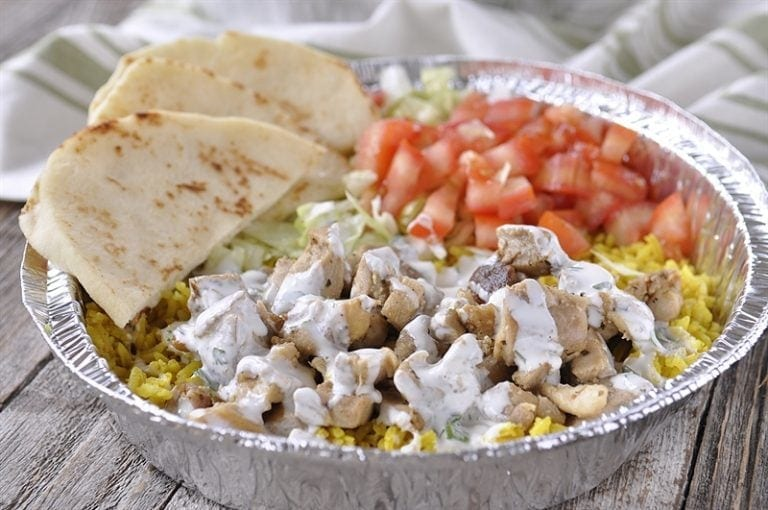

Home
Halal Chicken and Rice

My favorite way to cook chicken and rice.
This recipe is fairly low effort but incredibly satisfying. I found this
after having tried chicken and rice at a food truck in New York. I
wanted to recreate it at home. This recipe in particular is completely
copied from yourhomebasedmom,
and it looks like they copied it from serious eats.
Ingredients
About 6 servings.
Chicken
- (2 tbsp) lemon juice
- (1 tbsp) chopped fresh oregano
- (1/2 tbsp) ground coriander
- (3 cloves) garlic
- (1/4 cup) light olive oil
- Kosher salt and freshly ground black pepper
- (2 lbs) boneless skinless chicken thighs
- (1 tbsp) vegetable or canola oil
Rice
- (2 tbsp) butter
- (1/2 tsp) turmeric
- (1/4 tsp) ground cumin
- (1 1/2 cups) long-grain or Basmati Rice
- (2 1/2 cups) chicken broth
- Kosher salt and freshly ground black pepper
Sauce
- (1/2 cup) mayonnaise
- (1/2 cup) Greek yogurt
- (1 tbsp) sugar
- (2 tbsp) white vinegar
- (1 tsp) lemon juice
- (1/4 cup) chopped fresh parsley
- Kosher salt and freshly ground pepper
To serve
- (1 head) cabbage (shredded)
- (1) large tomato (chopped)
- Pita bread or naan bread
Steps
Chicken
- Combine the lemon juice, oregano, coriander, garlic, and olive oil in a blender and blend until smooth and well combined.
- Season the marinade to taste with salt and pepper.
- Place the chicken in a 1-gallon zipper-lock bag and add half of the marinade (reserve the remaining marinade in the refrigerator).
- Turn the chicken to coat, seal the bag, and marinate the chicken in the refrigerator for at least 1 hour and up to 4 hours, turning occasionally to redistribute the marinade Do not marinate for longer than 4 hours. If need to wait longer, remove chicken from mariade and pat dry and refrigerate until ready to use.
- When ready to use, season with salt and pepper, going heavy on the pepper.
- Heat the oil in a 12-inch heavy-bottomed cast iron or stainless-steel skillet over medium-high heat until it is lightly smoking.
- Add the chicken pieces and cook without disturbing until they are lightly browned on the first side, about 4 minutes.Turn the chicken and reduce the heat to medium and cook until the chicken is cooked through and the center of each thigh registers 165°F. on an instant-read thermometer, about 6 minutes longer.
- Add the chicken pieces and cook without disturbing until they are lightly browned on the first side, about 4 minutes.Turn the chicken and reduce the heat to medium and cook until the chicken is cooked through and the center of each thigh registers 165°F. on an instant-read thermometer, about 6 minutes longer.
- Chop the chicken into 1/2- to 1/4-inch chunks. Transfer to a medium bowl, add the remaining marinade, cover loosely with plastic, and refrigerate while you cook the rice and prepare the sauce.
Rice
- Melt the butter over medium heat in a large heavy pan. Add the turmeric and cumin and cook until fragrant but not browned, about 1 minute. Add the rice and stir to coat.
- Cook, stirring frequently, until the rice is lightly toasted, about 4 minutes.
- Add the chicken broth. Season to taste with salt and pepper. Raise the heat to high and bring to a boil.
- Cover, reduce to a simmer, and cook for 15 minutes without disturbing. Remove from the heat and allow to rest until the water is completely absorbed and the rice is tender, about 15 minutes.
Sauce
- In a small bowl, combine the mayonnaise, yogurt, sugar, vinegar, lemon juice, parsley, Whisk to combine. Season to taste with salt and pepper. Refrigerate until ready to use.
To serve
- Return chicken, reserved marinade, and all pan juices to the skillet. Cook over medium-high heat, stirring occasionally, until heated through. To serve, divide the rice, lettuce, tomato, and toasted pita bread evenly among four to six plates. Pile the chicken on top of the rice. Top with the white sauce. Serve immediately. Have extra sauce on hand!